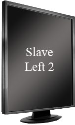
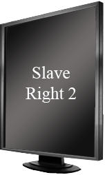

Selecting screen
- Select screen below to which this screen is to be placed
- Once all the screens to be used are selected, hit enter to continue
You need to select your position before being able to continue.
You are the master. Press ENTER to continue.
You are a slave. You will continue when the Master continues.

